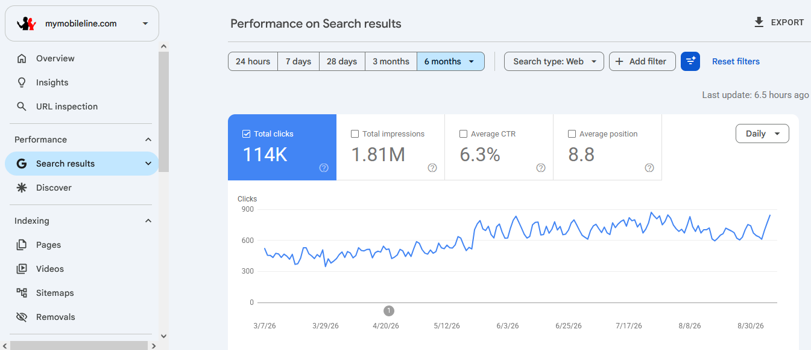

Case Study 01 · Search Performance
MyMobileLine.com: Search performance and authority recovery
Part one of the MyMobileLine case study: Google Search Console performance. The companion link-profile recovery page documents the authority-building work for this same website.
Total clicks
114K
Reported in GSC
Total impressions
1.81M
Reported in GSC
Average CTR
6.3%
Reported in GSC
Average position
8.8
Reported in GSC
Overview
Six-month Google Search Console performance view for MyMobileLine.com, with Web search selected. The daily clicks graph varies over the period and has higher levels in the later portion of the displayed timeline.
This is an aggregate performance snapshot. Without comparable previous-period data, it does not establish a specific growth rate or causal impact.
Analysis opportunities
- Segment performance by query and landing page.
- Find high-impression queries with CTR improvement potential.
- Prioritize relevant keywords ranking around positions 5–15.
- Compare device, country, and date segments.
- Validate performance changes against known SEO releases.
Original evidence
